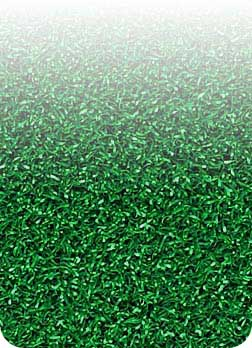
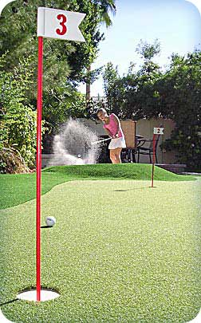
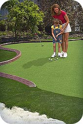

West Palm Beach Putting Greens
West Palm Beach Putting Greens & the most realistic artificial golf turf in Florida!
A putting tip
from a true golf pro
who knows putting greens:

Our golf passion is strong like yours.
You're sure to improve your golf score with putting green products
from Home Putting Solutions - Palm Beach
You're sure to improve your golf score with putting green products
from Home Putting Solutions - Palm Beach
Synthetic Putting Greens and PAR Turf
The cornerstone of outstanding putting greens
and short-game practice facilities is PAR Turf™,
our Pure Absolute Roll™ turf product line.
Our PAR Turf series of synthetic turf has been created through years of R&D, working directly with turf mills to create the finest nylon artificial playing surfaces available today. PAR Turf is available in 3 distinct versions, each designed to provide flexibility in meeting your specific synthetic turf needs:
- PAR 1 - Our purest and fastest putting surface simulates championship greens
and stimps at 10.5
- PAR 2 - Our most flexible and popular putting surface holds chips from 25 yards
and stimps at 9.5
- PAR 3 - Holds shots from up to 80 yards! The pure absolute roll stimps at about 9.0
Unlike the original deep sand-filled backyard golf greens which are still widely promoted today, even here in West Palm Beach, our high-tech nylon putting greens don't require the deep sand infill used by others to prop up their inferior putting green turf fibers.
The extremely durable Putters Edge nylon fibers & proprietary "tufting" process combine to create high performance synthetic putting green turf - for years of realistic putting practice. We're so confident, we back PAR Turf putting green turf with an industry-leading 10-year warranty.
Putters Edge - A Green for Every Golfer
More than putting green marketing, it's our passion.
Transform your Yard. The addition of a Home Putting Solutions - Palm Beach putting green will indeed transform your Palm Beach County yard. Putting greens add beauty and recreation to your home's exterior space. Family, friends and associates will enjoy long hours of entertainment value from your yard's beautiful new additions. Our design commitment is always to deliver an integrated package that complements your new or existing landscaping. There is so much more available today than the backyard putting greens of long ago!

Transform your Game. Beyond the value of your family's recreational entertainment, golfers who are serious about golf game improvement will see significant results in their golf scores with a Putters Edge green. Our designs include a variety of short-game practice options, like stand-alone chipping platforms, bunkers and more.
In a typical round of golf, the average player accumulates 50-60 chips and putting strokes. Regardless of your full-swing skill, refining your short-game feel and confidence is the surest way to shave strokes from your score on the golf course. Convenient, satisfying golf practice at home - shared with family & friends - WILL transform your golf scores!
A Green for Every Golfer. Home Putting Solutions - Palm Beach also carries full-ranged specialty golf turfs including fringes, tee line, mini golf - everything needed for your West Palm Beach area "Dream Green"!
Home Putting Solutions - Palm Beach putting greens are more than simple backyard entertainment - amazing landscaping opportunities, too - whether backyard putting green or complete office, hotel, condo association, nursing home or health facility lawn systems.
Whatever your home or business turf needs, we have the approporiate synthetic sports turf, and the design and installation experience to beautifully bring your best Florida putting green ideas to life.